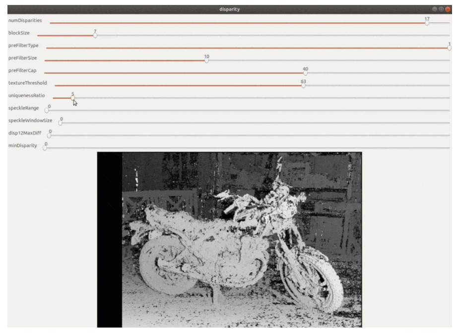
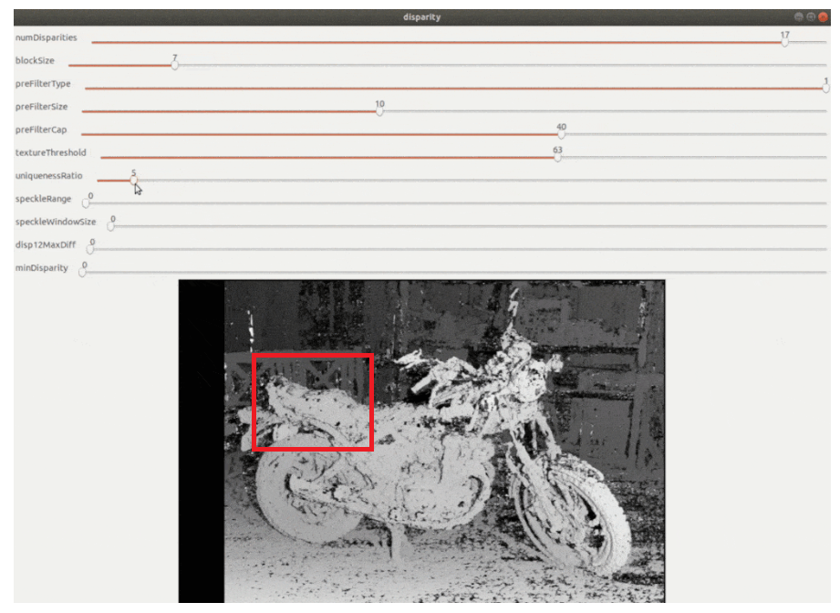

Entender os conceitos de Mapa de Disparidade, Retificação de Imagens, e Mapa de Produndidade. Realizar um experimento de medida da distancia de objetos através do mapa de disparidade de uma câmera estéreo. Elaborar o relatório em equipe de alunos.
Estudo da teoria sobre estereoscopia e parâmetros conjuntos de duas câmeras, e também sobre processo de mapeamento de disparidade entre duas cameras.
Inicialmente foi realizado a calibraçao das cameras usando o arquivo que tira as fotos de ambas as cameras com um intervalo de 5 segundos por foto. Em seguida, é utilizado o programa de calibração em que calcula e retorna a tabela com os parametros de calibração desta camera. Com o arquivo da calibração, alimentamos no arquivo de “disparity2depth_calib.py". Porem o grupo observou que neste código, é aberto uma janela com o feed do video com uma camada de processamento em relação a imagem das duas cameras. Abaixo segue como a janela deveria abrir, onde estaria os ajustes dos parametros e em uma caixa o feed de video.
No entanto, reparamos que o feed estava incorreto então optamos por realizar a calibração novamente. Depois de algumas novas calibrações, foi possivel obter uma imagem pelo feed de video porem ele estava com um zoom e apenas pegando uma pequena seção do video. Acreditamos que no processo de calibração, o posicionamento das cameras sofreram alguma alteração e/ou o codigo interpreta que apenas aquela seção em particular em que há uma intersecção das imagens das cameras. Abaixo segue uma imagem onde representa como que o nosso sistema estava se comportando, onde o feed de video apresentado seria apenas o que está marcado com o quadrado vermelho.
Mexendo nos parametros, era possivel de obter uma imagem mais limpa do feed, porem como estava com um zoom, nao foi possivel realizar os demais passos do experimento, onde seria uma estimativa da distancia de um certo objeto a partir desse calculo de paralaxe entre as cameras:
Esse primeiro laboratório serviu para inicializarmos com o processo de aprendizado com Python e algumas funções. A maioria das funções já estavam escritas porem estavam com algum erro e/ou com parametros errados. Com algumas alterações desses codigos os programas rodaram conforme solicitado.
O grupo conseguiu observar algumas funções que serão utilizadas no futuro para Visão Computacional, tais como captura de tela, captura de vídeo e processamento dessas imagens e videos. Com essas ferramentas, podemos aplicar diversas ferramentas de processamento de dados, machine learning para diferentes aplicações.